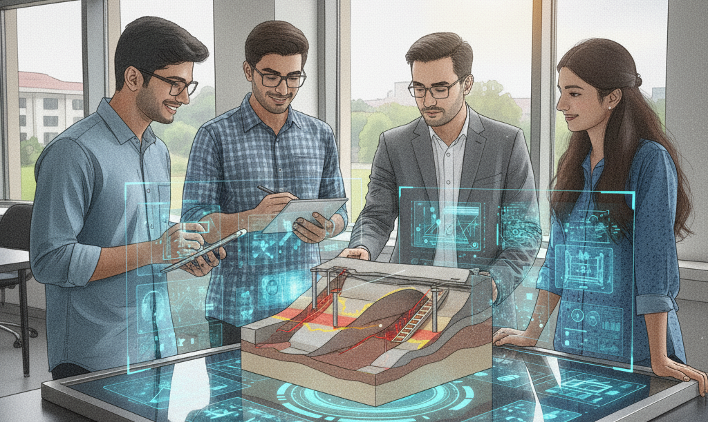

Student Guidance

Post-Doctoral Fellows
- Dr. Saurav Kumar (IPDF; 2024-2025) – Probabilistic landslide hazard mapping
[Current position: Assistant Professor, NIT Silchar]
ResearchGate Profile
- Dr. Sachin Kumar (FARE Fellow; 2024-2025) – Dynamic behaviour of rocks
[Current position: Post-Doctoral Fellow, University of Adelaide]
ResearchGate Profile
- Surabhi Maurya (2025-Ongoing) – Hybrid reliability methods for rock engineering
[Current position: FARE Fellow, IIT Kanpur]
ResearchGate Profile
PhD Students
- Akshay Kumar (MTech + PhD; Completed; 2018–2024) – Imprecise reliability and global sensitivity analysis of rock structures with limited data of rock properties.
[Current position: Post-Doctoral Fellow, IIT Delhi]
ResearchGate Profile
- Sachin Kumar (MTech + PhD; Completed; 2018–2024) – Experimental and numerical assessment of the impact loading response of rocks with filled/unfilled flaws
[Current position: Post-Doctoral Fellow, University of Adelaide]
ResearchGate Profile
- Surabhi Maurya (Submitted; converted from MTech) – Hybrid Reliability Methodologies for Rock Engineering with Information Level Based Uncertainty Modelling of Inputs
[Current position: FARE Fellow, IIT Kanpur]
ResearchGate Profile
- Spandan Sahu (In progress; PMRF) – Coupled reliability and finite element limit analysis methodologies for analyzing rock tunnels stability
ResearchGate Profile
- Gaurav Mathur (In progress; IIT Patna) – Cyclic behaviour of jointed rocks subjected to freezing and thawing
ResearchGate Profile
- Sampat Raj (In progress; IIT Delhi) – Reliability analysis of stone columns based on alternate uncertainty models
[Current position: Manager, Engineers India Limited, Delhi]
ResearchGate Profile
- Animesh Anand (In progress; converted from MTech) – Rate dependency in the strength behaviour of rocks subjected to high temperature and chemical weathering
ResearchGate Profile
- Sameer Lawankar (In progress; converted from MTech; PMRF) – Development of probabilistic bonded block model framework to study micro/macro mechanical behaviour and damage processes in rocks
ResearchGate Profile
- Yatharth Mittal (In progress; converted from MTech) – Stochastic THMC-coupled methods for hydrogen storage in rocks
ResearchGate Profile
M Tech Students
- Surabhi Maurya (Completed in 2025) – An augmented uncertainty quantification framework for rock engineering: probabilistic application for rock tunnels
- Animesh Anand (Completed in 2025) – Transition in rate-dependent shear response of rock like joints due to clay-infill: strength, dilation, stick-slip and roughness analysis
- Gaurav Meena (Completed in 2024) – Experimental investigation on rate-dependency of acid treated rock joints
- Akshay Kumar (Completed in 2023) – Reliability assessment of deep excavation in spatially random cohesion weakening friction strengthening (CWFS) rock mass
- Sachin Kumar (Completed in 2023) – A high strain rate-dependent damage constitutive model for rocks
- Ajay Kumar (Completed in 2023) – Prediction and global sensitivity analysis of cavern deformations using response surface methodology and sobol’s sensitivity analysis
- Siddhanth Singh (Completed in 2021) – Development of re-sampling reliability approaches for stability analysis of rock slopes
- Manoj Kumar (Completed in 2021) – Development of reliability methods for support estimation to mitigate circular and toppling rock slope failures
- Ankita Senapati (Completed in 2020) – Probabilistic analysis of rock tunnels based on different strength criteria
- Gaurav Mathur (Completed in 2020) – Fracturing of jointed rocks under uniaxial loading
- Abhay Pratap Singh (In progress) – Imprecise global sensitivity analysis of deep excavations along massive rocks
- Sameer Lawankar (In progress; converted to PhD) – Development of probabilistic bonded block model framework to study micro/macro mechanical behaviour and damage processes in rocks
- Yatharth Mittal (In progress) – THMC modelling of rocks for energy storage applications
- Aniket Verma (In progress) – Continuum grain based modelling of rocks: analysis and micro-mechanism
- Akanksha Gupta (In progress) – Random field analysis of rock structure under dynamic loading: application of dynamic hoek-brown criterion
- Shivam Joshi (In progress) – RQD Analysis for rock core images using deep learning
|